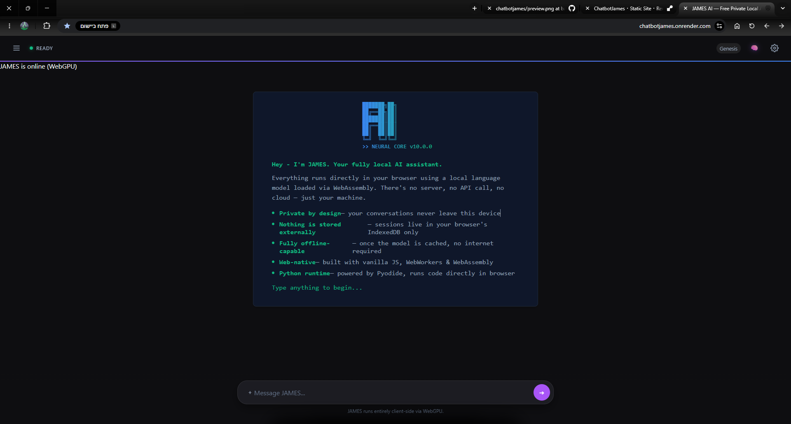

JAMES — Private AI That Runs in Your Browser
A free, local-first AI assistant that runs entirely in your browser — no account, no server, and no data ever sent anywhere. JAMES combines browser-native inference, streaming responses, and a tool-aware architecture so your conversations stay private while still being powerful.

What makes JAMES different?
Unlike cloud-based chat apps, JAMES keeps computation local. The model runs in a Web Worker, the UI is responsive, and no conversation data is sent to external servers unless you explicitly request external information through tools.
Core values
Privacy first
Threads live only on your device. Clearing site data removes everything: history, session state, and cached model files.
Browser native
No native wrapper is required. JAMES runs in the browser using standard web APIs, no install needed.
Streaming responses
Answers appear token by token, giving a fast and alive experience even when the model computes locally.
Tool aware
Built-in tools let JAMES fetch weather, lookup Wikipedia, convert currency, execute Python, and more.
Built for the browser
Transformers.js
Handles model loading, tokenization, and generation in the browser, with support for both WebGPU and WASM backends.
Web Workers
Inference runs off the main thread so the UI remains smooth while generation is in progress.
Dynamic Models
Automatically evaluates your hardware capabilities (RAM, WebGPU) to select the optimal model for your device.
Smart UI Modes
Adapts fluidly across devices with dedicated Desktop, Mobile, and 10-foot TV viewing interfaces.
IndexedDB
Stores chat threads locally in the browser. No external database, no cloud sync.
Tools bridge
Routes browser APIs like clipboard and geolocation through a safe bridge into the tool system.
Frequently Asked Questions
Is JAMES free?
Yes, completely free. No account, no subscription, no API key. Open the site and start chatting.
Does JAMES send my messages to a server?
No. All AI inference runs locally in your browser using WebGPU or WASM. Your messages never leave your device unless you explicitly use a tool that fetches external data (like weather or Wikipedia).
Does it work offline?
Yes. After the model weights download once (a one-time step), JAMES works fully offline. You can also install it as a PWA for a native-like offline experience.
What browser do I need?
Chrome or Edge for the fastest WebGPU experience. Firefox works via WASM. Safari has limited support. No extensions or plugins needed.
What AI models does JAMES use?
JAMES auto-selects from Qwen2.5 0.5B, SmolLM2 1.7B, Llama 3.2 1B, and Llama 3.2 3B based on your hardware. You can also pick a model manually via the ⚙️ settings panel.
Made by